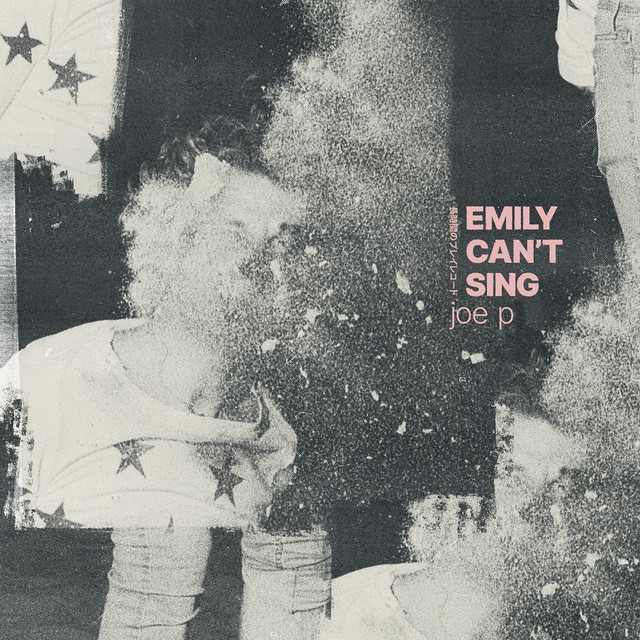

Underground Pop - My Favorite Genre
Artists include, Blake Rose, Dempsey Hope, Joe P, Alexander 23 and many, many more. Tones shift from optimistic love songs all the way to emo. Don't worry, I'll warn you! If your looking for extraordinary, hopeful, uplifting music, you've come to the right place. I have a taste for the bizarre and comical, too, so look out for that in songs like Off My Mind, by Joe P. and Girl by Alexander 23, two of my favorites. If you want sweet and romantic, start with Kassidy by Dempsey Hope and She Likes It by Russel Dickerson. Gracie Abrams, Alt Bloom, The Band Camino, Ben Kessler and Corey Harper definitely deserve your attention as well.
Some of the worthy mentions
Joe P. is an odd duck. Many of his songs are interesting and upbeat, but some are downright innapropriate. So be careful when treading here, but enjoy his quirky lyrics and shameless vocals.
Kassidy is a sweet song by a sweet guy, Dempsey Hope. As long as you have the explicit filter on (see thetipspage) his music is pretty safe to explore.
Linked to the image below is my massive pop playlist.